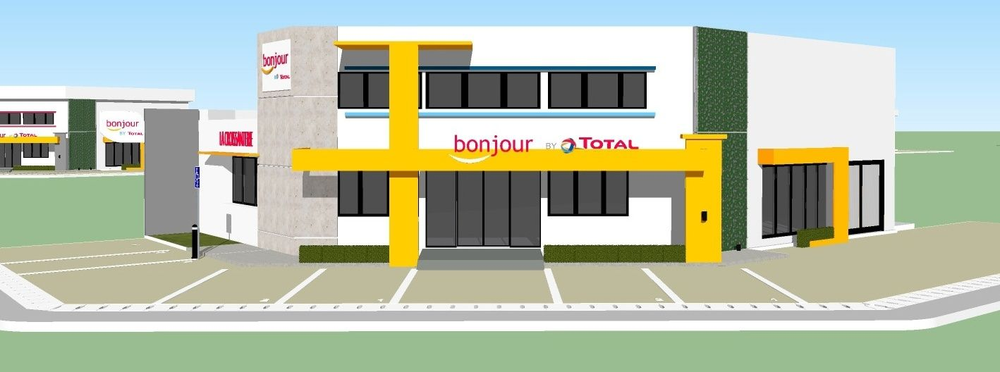
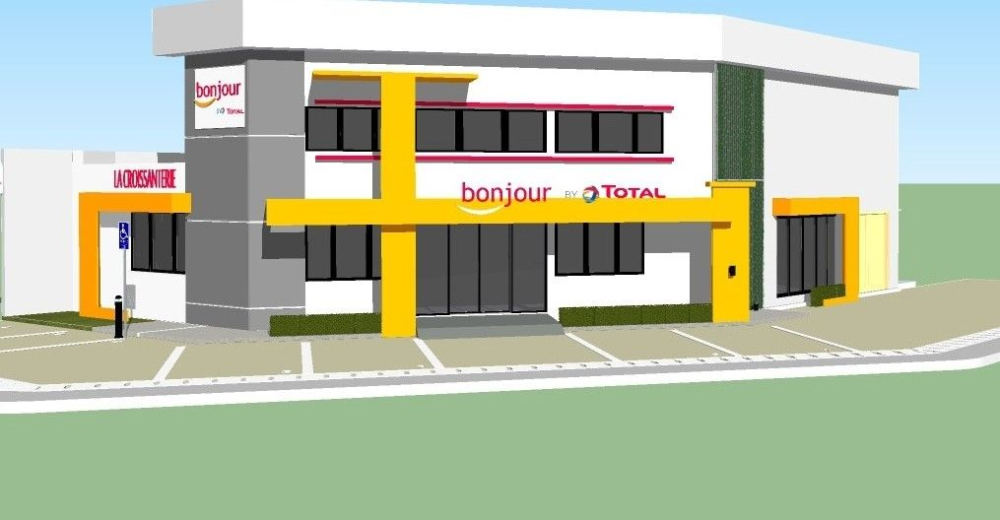
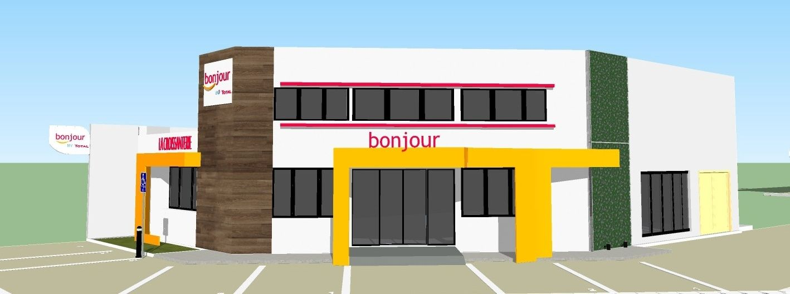

Une Boulangerie-Café Moderne
Le concept pour La Croissanterie repose sur la création d'un espace chaleureux et dynamique, alliant l'artisanat traditionnel de la boulangerie à une esthétique industrielle chic. L'utilisation de matériaux bruts comme le bois chaud, le métal noir et le carrelage de métro crée une ambiance urbaine et accueillante.
L'agencement a été optimisé pour fluidifier le parcours client tout en maximisant les zones de dégustation. L'éclairage suspendu et les touches de végétation apportent une atmosphère conviviale, faisant de chaque visite une expérience sensorielle complète.
Type
Aménagement Commercial
Expertise
Design d'Espace & Branding


